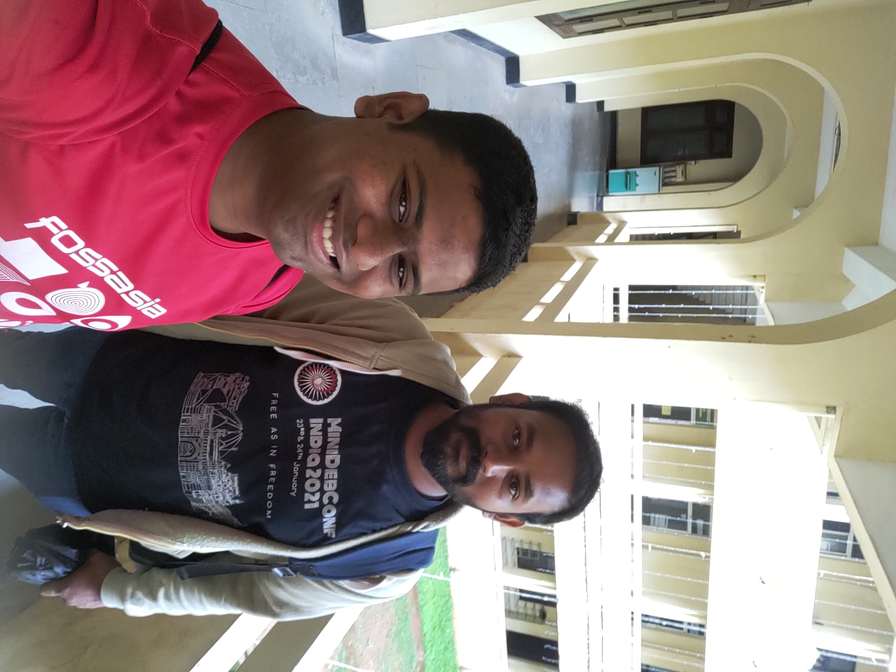
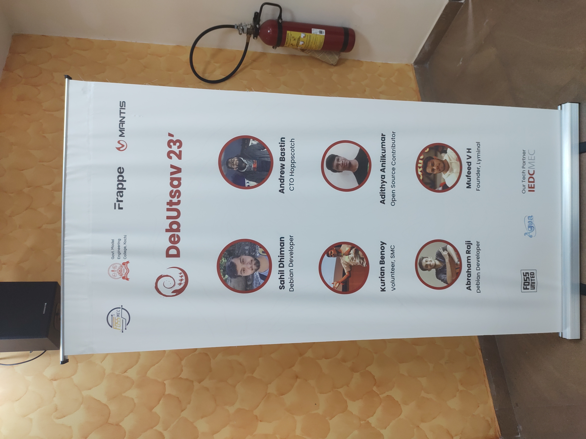
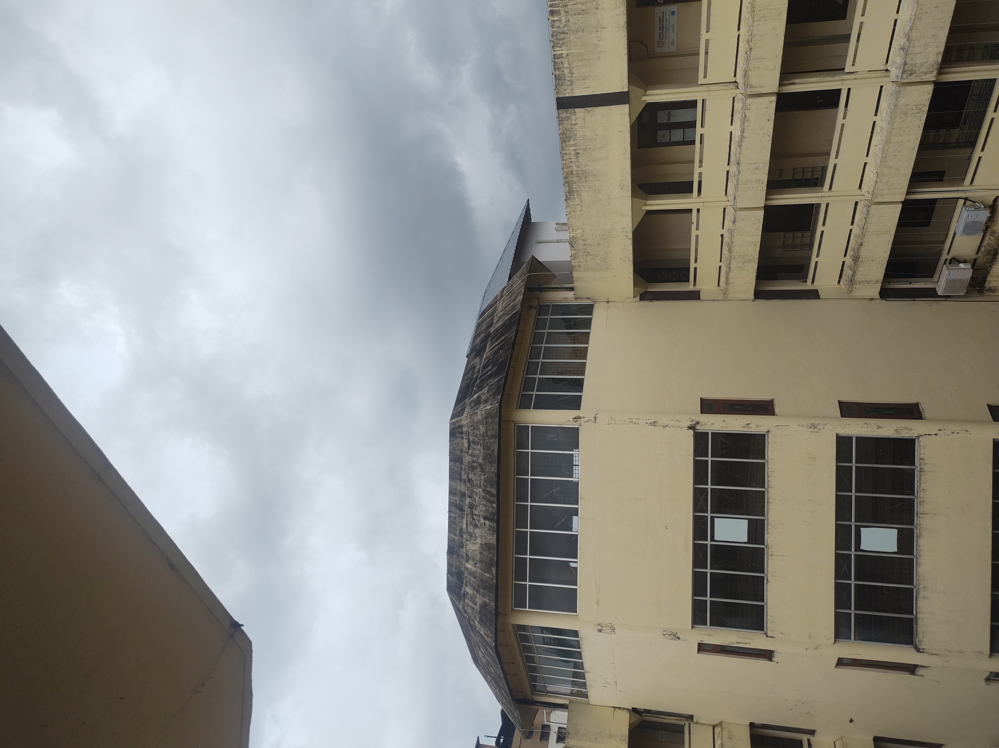
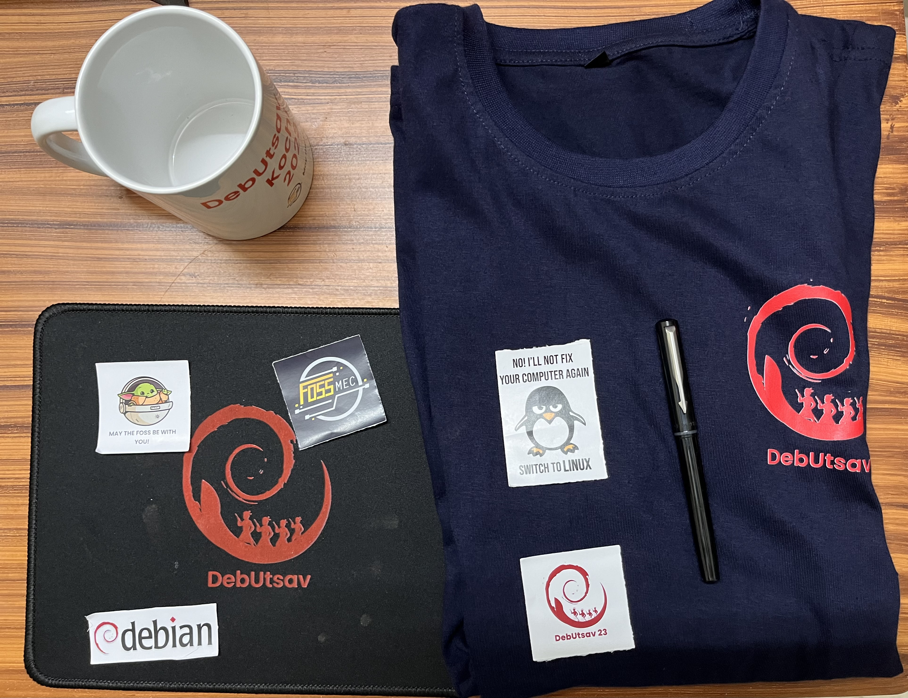
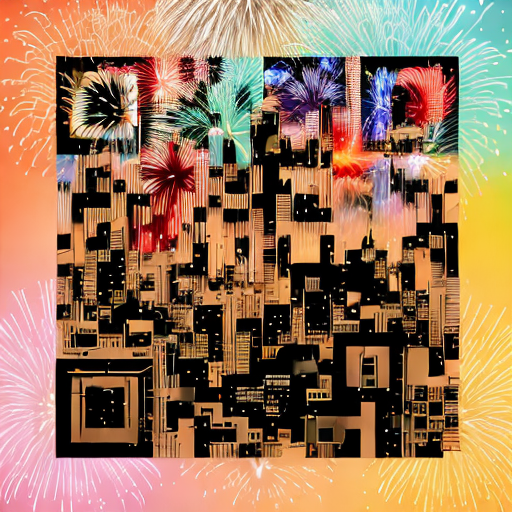

Links to talk
Scheduled Time: Saturday, June 17, 2023, 2:45 PM IST - 3:45 PM IST
Questions received
- Why is Malayalam more complex than other languages like Hindi, Marathi etc. While I understand the methodology of comparing type-to-token ratio (TTR), isn’t it possible that the dataset used for comparison may not include all the words of a particular language?
- Do you think whether just a privileged few people can do Machine Learning?
- What do you think about Mojo, will it help in reducing the problem of few privileged people doing ML?
- How much resources is required to fine tune Whisper models?
- How much did it cost for you to do benchmarking in Malayalam?
- Does a biriyani meal for a family in Singapore costs $30? (Apologies for my previous incorrect statement during the talk, where I mentioned the cost of one biriyani in Singapore might be about $30. This analogy was made to compare the cost of benchmarking models for Malayalam.)
- I absoluted loved
whisper.cppbecause it’s able to provide timestamps as well, is it possible to implement timestamps in Malayalam as well? - What are your thoughts on LLM finetuning?
Quiz Questions
- Name three Malayalam fonts? (Hint: SMC makes a lot of fonts)
- Who developed the user friendly GNU/Linux distribution called Slynux during his high school? (Hint: He is an xMECian)
- Which was the best performing malayalam ASR model according to malayalam_asr_benchmarking results?
- What is the name for debian versions 11 & 12?
Quiz Answers
- There are a lot of Malayalam fonts. Check SMC fonts page for answers
- Sarath Lakshman, do check his website
- Thennal D K’s whisper-medium-ml model
- “bullseye”(Debian 11) and “bookworm”(Debian 12). Fun fact, all the versions of Debian is named after characters in movie Toy story.
Thanks to
All the folks who asked questions and made the session interactive, a big thank you from my side. As a speaker, it was the first time I was satisfied with myself for making the session interactive. My session demanded an interactive session as my slot was just after having a delicious lunch of biriyani. Also a special thanks to the volunteer who distributed the chocolotes to folks who answered my quiz questions. The organizers of event were fabulous, a special mention to names of people I remember at time of writing. Thank you Jithin, Karthik, Alaka, Theerthana, Aneeta who was always there to help. Also it was nice to meet FOSSMEC faculty in charge Sony mam.
Photos





